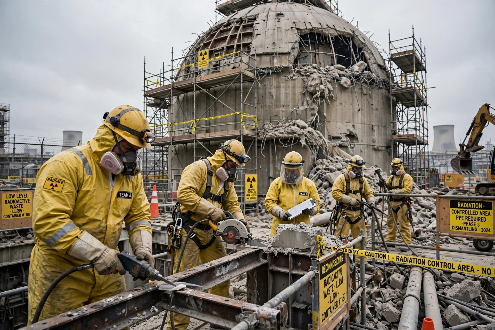

Nuclear decommissioning
Nuclear decommissioning is the process by which a nuclear facility is dismantled and the site is decontaminated so that it no longer requires radiation protection measures. It is the final stage in the lifecycle of a nuclear power plant, experimental reactor or weapons facility.

1. Stages
2. Strategies
3. Costs
4. Examples
Stages
Decommissioning typically proceeds through shutdown and defuelling; removal of operating systems and contaminated equipment; demolition of structures; and final site survey and release. The IAEA classifies the work into three stages, ending with unrestricted release of the site.
Strategies
Three broad strategies are recognised:
- Immediate dismantling (DECON): work begins soon after shutdown and finishes within a few decades.
- Safe enclosure (SAFSTOR): the facility is placed in monitored storage for 40–60 years so radioactivity decays before dismantling.
- Entombment (ENTOMB): radioactive structures are encased in concrete on site indefinitely.
Costs
Decommissioning a large power reactor typically costs several hundred million to over a billion dollars. Operators in most countries must accumulate dedicated funds during a plant's operating life. Costs in the UK, with its legacy of early military sites such as Sellafield, are far higher — the Windscale piles remain among the most complex decommissioning challenges in the world.
Examples
Completed or advanced projects include Maine Yankee in the United States, the German Greifswald plant, and Japan's ongoing work at Fukushima Daiichi. Hundreds of reactors worldwide will require decommissioning by mid-century.
See also: Radioactive waste · Windscale fire · Nuclear power